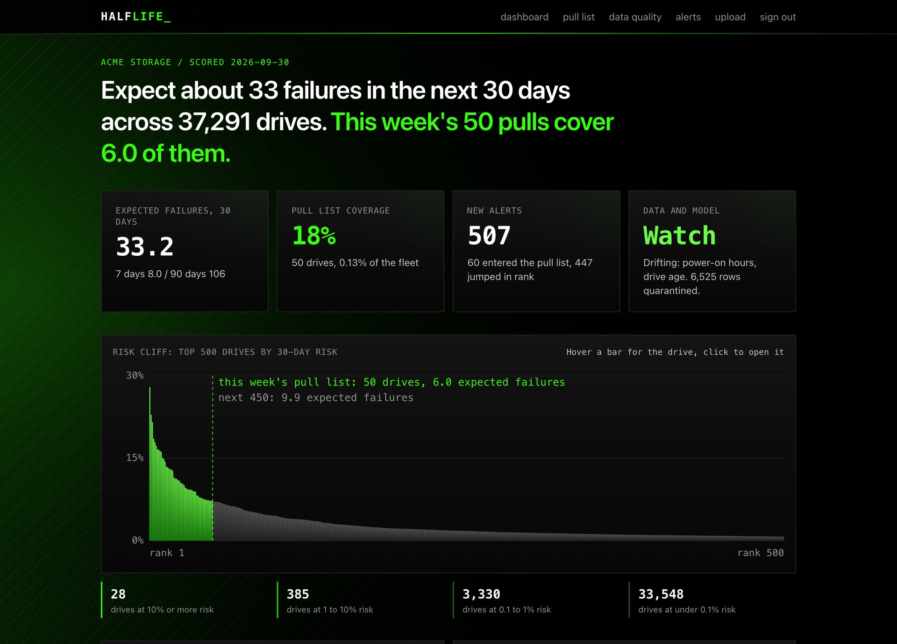

drive failure prediction / backblaze drive stats
Replace drives before they die, without pulling healthy ones.
Expect about 33 failures across the fleet in the next 30 days. This week's 50 pulls cover 6.0 of them, about 2x what the naive SMART rule would catch.
the problem
the cost of surprise
Storage operators lose redundancy, rebuild time and on-call hours when a drive dies without warning.
the cost of caution
Pulling drives "just in case" wastes hardware and technician time, and most pulled drives were healthy.
what halflife does
Every drive gets a calibrated chance of failing within 7, 30 and 90 days, so a team that can replace K drives a week pulls the right K, with reasons in plain language and alerts when a drive turns risky.
the product
Is the fleet OK this week, and which drives do I pull? Every number below links to the drives behind it: the pull list, each drive's sensor history and reasons, alerts, data quality and uploads.

system design
Python workers do the heavy data work on Parquet. Only curated outputs reach Postgres, and the web app reads them through row-level security.
pipeline
01 / ingest
Every night DuckDB reads only the months Backblaze has published since the last run from its Iceberg table on B2. A stable md5 hash of the serial keeps 10% of drives with their full history. Re-ingesting a month replaces its partition.
02 / clean
One canonical schema, nine SMART attributes. Counters that drop inside a drive are rebased. Duplicates, impossible values and rows after a drive's first failure are quarantined with a reason. Rows in always equal rows out plus quarantined.
03 / features
One SQL query: age, capacity, SMART values, 7 and 30 day deltas, 7 day temperature mean. Every window looks back only. A leakage test with sentinel future rows fails if any window peeks ahead.
04 / train
Time split with 30 day gaps. Naive rule, logistic regression and LightGBM compared; the best is chosen on validation, never on test. Separate heads for 7, 30 and 90 days are Platt-calibrated so risk is a real probability.
05 / score
Every active drive gets its 7, 30 and 90 day risk, a rank and its top three SHAP drivers as plain sentences, upserted to Supabase keyed by fleet, drive and date. Re-running a date adds no rows and removes drives that left the fleet.
06 / upload
A customer uploads a messy CSV in the app. Halflife proposes a column mapping with a confidence per field (name similarity plus value checks such as Fahrenheit or bytes), the admin reviews it in the browser, and the drives are scored.
07 / alerts
A SQL function compares each scoring day with the previous one: a drive alerts when it enters the weekly pull list or jumps 100+ ranks toward it. Alerts show in the app and post to Slack; re-runs never repeat them.
08 / monitor
Each night measures drift (PSI of every feature against training) and backtests the latest Monday whose outcomes are known. Today it flags age and power-on hours: the fleet is older than the training data.
messy data, counted
Latest full run: 2024-01-01 to 2026-09-30, 10% of drives.
| Check | Count |
|---|---|
| Rows in (bronze) | 32,148,944 |
| Rows out (silver) | 32,142,419 |
| Quarantined: capacity reported as 0 or less | 3,312 |
| Quarantined: rows after a drive's first failure | 3,213 |
| Counter resets rebased | 4,903 |
| Rows adjusted by rebasing | 651,521 |
| Schema versions seen (reported SMART columns) | 7 |
| Drives still active / retired or missing / failed | 37,290 / 3,307 / 1,243 |
northwind onboarding
Renamed columns, Fahrenheit temps, MM/DD/YYYY dates, numbers with thousands separators, two SMART columns missing. Uploaded through the app, every field mapped correctly, 712 duplicates (2%) quarantined, 300 drives scored at 77% attribute coverage.
quality gate
Each clean run writes a JSON and Markdown report and fails if any column's null rate jumps past a threshold against the previous run. Uploads also count values that could not be parsed, per column.
model results
Test period 2026-03-01 to 2026-08-31, weekly snapshots of about 37,000 drives, K = 50 pulls per week.
Bars: recall at 50, the share of next-30-day failures that land in the weekly pull list.
| Model | PR-AUC | Precision@50 | Recall@50 |
|---|---|---|---|
| Naive rule (reallocated or pending sectors > 0) | 0.052 | 7.7% | 10.3% |
| Logistic regression | 0.101 | 14.8% | 19.7% |
| LightGBM | 0.105 | 15.9% | 21.2% |
| Calibrated chance of failing | PR-AUC | Expected | Observed |
|---|---|---|---|
| Within 7 days | 0.062 | 220 | 244 |
| Within 30 days | 0.105 | 900 | 1,015 |
| Within 90 days | 0.157 | 1,876 | 2,126 |
Failures are rare (about 0.1% of drives fail in any 30 days), so most pulls are still healthy drives at this budget. Each horizon is Platt-calibrated on the validation period, so risk is a probability; it under-predicts by about 11% on the test period, shown as is.
stack
Python 3.12, uv, DuckDB, Polars, LightGBM, scikit-learn, Typer. Two Railway cron jobs from one 1.2 GB Docker image: nightly and uploads.
Bronze, silver and gold Parquet on a volume. Only scores, 180 days of history for the top 1,000 drives, and quality reports go to Postgres.
Supabase Postgres with row-level security on every fleet table, admin and viewer roles, alert logic in SQL, a private Storage bucket for uploads, and pgTAP permission tests in CI.
Next.js App Router on Vercel, server components with the user's session, Tailwind, Recharts. No service-role key in the browser.
run it
# needs uv, Node 22, Docker, Supabase CLI make setup cp .env.example .env # public read-only B2 values from Backblaze supabase start cd workers uv run --env-file ../.env halflife nightly # ingest, clean, features, score, alerts uv run --env-file ../.env halflife uploads # process files uploaded in the app cd ../web && npm run dev # open localhost:3000, "demo / Acme Storage"
Deploy: Supabase (migrations and seed), two Railway cron services built from workers/Dockerfile, and the web app on Vercel. Exact steps are in docs/deploy.md.
next